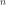
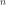
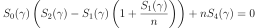

LogNormalFactory¶
(Source code, png, hires.png, pdf)
{kind=link}
{kind=link}
-
class
LogNormalFactory(*args)¶ Lognormal factory distribution.
- Available constructors:
- LogNormalFactory()
See also
Notes
OpenTURNS has implemented several estimators to build a LogNormal distribution from a scalar sample. Here are detailed the estimators.
Moments based estimators:
Lets denote:
- the empirical mean of the sample,
- its empirical variance,
- its empirical skewness.
We note . The estimator of is the positive root of the relation:
(1)¶
Then we estimate
 using:
using:(2)¶
where
 .
.Modified moments based estimators:
we use and defined as previously. The third equation is:
(3)¶
The quantity
![\displaystyle EZ_1 (n) = \frac{\Eset[ \log (X_{(1)} - \gamma)] - \mu_l}{\sigma_l}](../../_images/math/06e4a5fb3f5aabc7234ee3a9dcc0286074adff47.svg) is the mean of the first order statistics of a standard normal sample of size
. We have:
is the mean of the first order statistics of a standard normal sample of size
. We have:(4)¶
where and are the pdf and cdf of the standard normal distribution. The estimator of is obtained as solution of:
(5)¶
where . The we have
using
the relations defined for the moments based estimators (2).Local maximum likelihood estimators:
The following sums are defined:
The Maximum Likelihood estimators of are defined by:
(6)¶
This, verifies the relation:
(7)¶
under the constraint .
Methods
build(*args)Build the distribution. buildAsLogNormal(*args)Build the distribution as a LogNormal type. buildEstimator(*args)Build the distribution and the parameter distribution. buildMethodOfLocalLikelihoodMaximization(sample)Build the distribution based on the local likelihood maximum estimators. buildMethodOfModifiedMoments(sample)Build the distribution based on the modified moments estimators. buildMethodOfMoments(sample)Build the distribution based on the method of moments estimators. getBootstrapSize()Accessor to the bootstrap size. getClassName()Accessor to the object’s name. getId()Accessor to the object’s id. getKnownParameterIndices()Accessor to the known parameters indices. getKnownParameterValues()Accessor to the known parameters indices. getName()Accessor to the object’s name. getShadowedId()Accessor to the object’s shadowed id. getVisibility()Accessor to the object’s visibility state. hasName()Test if the object is named. hasVisibleName()Test if the object has a distinguishable name. setBootstrapSize(bootstrapSize)Accessor to the bootstrap size. setKnownParameter(values, positions)Accessor to the known parameters. setName(name)Accessor to the object’s name. setShadowedId(id)Accessor to the object’s shadowed id. setVisibility(visible)Accessor to the object’s visibility state. -
__init__(*args)¶
-
build(*args)¶ Build the distribution.
Available usages:
build(sample)
build(param)
build(sample, covMat)
Parameters: sample : 2-d sequence of float, of dimension 1
The sample from which the distribution parameters are estimated.
param : Collection of
NumericalPointWithDescriptionA vector of parameters of the distribution.
covMat :
CovarianceMatrixA covariance matrix.
Notes
In the first usage, the parameters are evaluated according the following strategy:
- OpenTURNS first uses the local likelihood maximum based estimators.
- OpenTURNS uses the modified moments based estimators if the resolution of (7) is not possible.
- OpenTURNS uses the moments based estimators, which are always defined, if the resolution of (5) is not possible.
In the second usage, the covariance matrix covMat is fulfilled with the covariance of the estimator of the parameter vector
 . The
technique used is bootstrap. In case of asymptotical normal convergence of the
estimator, it enables to build confidence intervals.
. The
technique used is bootstrap. In case of asymptotical normal convergence of the
estimator, it enables to build confidence intervals.
-
buildAsLogNormal(*args)¶ Build the distribution as a LogNormal type.
Available usages:
build(sample)
build(sample, method)
build(param)
Parameters: sample : 2-d sequence of float, of dimension 1
The sample from which the distribution parameters are estimated.
method : integer
An integer ranges from 0 to 2 corresponding to a specific estimator method: - 0 : Local likelihood maximum estimators - 1 : Modified moment estimators - 2 : method of moment estimators.
param : Collection of
NumericalPointWithDescriptionA vector of parameters of the distribution.
-
buildEstimator(*args)¶ Build the distribution and the parameter distribution.
Parameters: sample : 2-d sequence of float
Sample from which the distribution parameters are estimated.
parameters :
DistributionParametersOptional, the parametrization.
Returns: resDist :
DistributionFactoryResultThe results.
Notes
According to the way the native parameters of the distribution are estimated, the parameters distribution differs:
- Moments method: the asymptotic parameters distribution is normal and estimated by Bootstrap on the initial data;
- Maximum likelihood method with a regular model: the asymptotic parameters distribution is normal and its covariance matrix is the inverse Fisher information matrix;
- Other methods: the asymptotic parameters distribution is estimated by Bootstrap on the initial data and kernel fitting (see
KernelSmoothing).
If another set of parameters is specified, the native parameters distribution is first estimated and the new distribution is determined from it:
- if the native parameters distribution is normal and the transformation regular at the estimated parameters values: the asymptotic parameters distribution is normal and its covariance matrix determined from the inverse Fisher information matrix of the native parameters and the transformation;
- in the other cases, the asymptotic parameters distribution is estimated by Bootstrap on the initial data and kernel fitting.
Examples
Create a sample from a Beta distribution:
>>> import openturns as ot >>> sample = ot.Beta().getSample(10) >>> ot.ResourceMap.SetAsUnsignedInteger('DistributionFactory-DefaultBootstrapSize', 100)
Fit a Beta distribution in the native parameters and create a
DistributionFactory:>>> fittedRes = ot.BetaFactory().buildEstimator(sample)
Fit a Beta distribution in the alternative parametrization :
>>> fittedRes2 = ot.BetaFactory().buildEstimator(sample, ot.BetaMuSigma())
-
buildMethodOfLocalLikelihoodMaximization(sample)¶ Build the distribution based on the local likelihood maximum estimators.
Parameters: sample : 2-d sequence of float, of dimension 1
The sample from which the distribution parameters are estimated.
-
buildMethodOfModifiedMoments(sample)¶ Build the distribution based on the modified moments estimators.
Parameters: sample : 2-d sequence of float, of dimension 1
The sample from which the distribution parameters are estimated.
-
buildMethodOfMoments(sample)¶ Build the distribution based on the method of moments estimators.
Parameters: sample : 2-d sequence of float, of dimension 1
The sample from which the distribution parameters are estimated.
-
getBootstrapSize()¶ Accessor to the bootstrap size.
Returns: size : integer
Size of the bootstrap.
-
getClassName()¶ Accessor to the object’s name.
Returns: class_name : str
The object class name (object.__class__.__name__).
-
getId()¶ Accessor to the object’s id.
Returns: id : int
Internal unique identifier.
-
getKnownParameterIndices()¶ Accessor to the known parameters indices.
Returns: indices :
IndicesIndices of fixed parameters.
-
getKnownParameterValues()¶ Accessor to the known parameters indices.
Returns: values :
NumericalPointValues of fixed parameters.
-
getName()¶ Accessor to the object’s name.
Returns: name : str
The name of the object.
-
getShadowedId()¶ Accessor to the object’s shadowed id.
Returns: id : int
Internal unique identifier.
-
getVisibility()¶ Accessor to the object’s visibility state.
Returns: visible : bool
Visibility flag.
-
hasName()¶ Test if the object is named.
Returns: hasName : bool
True if the name is not empty.
-
hasVisibleName()¶ Test if the object has a distinguishable name.
Returns: hasVisibleName : bool
True if the name is not empty and not the default one.
-
setBootstrapSize(bootstrapSize)¶ Accessor to the bootstrap size.
Parameters: size : integer
Size of the bootstrap.
-
setKnownParameter(values, positions)¶ Accessor to the known parameters.
Parameters: values : sequence of float
Values of fixed parameters.
indices : sequence of int
Indices of fixed parameters.
-
setName(name)¶ Accessor to the object’s name.
Parameters: name : str
The name of the object.
-
setShadowedId(id)¶ Accessor to the object’s shadowed id.
Parameters: id : int
Internal unique identifier.
-
setVisibility(visible)¶ Accessor to the object’s visibility state.
Parameters: visible : bool
Visibility flag.